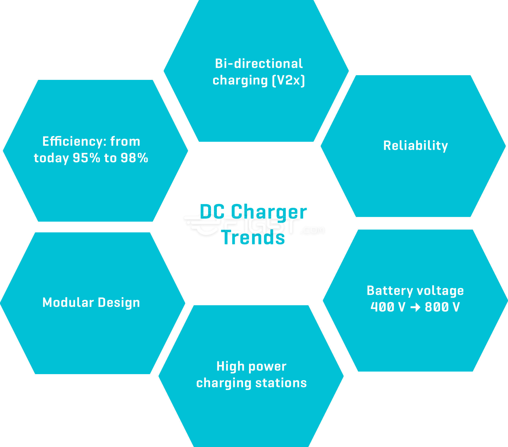

Key
facts about EV chargers
Charging infrastructure is the backbone of e-mobility, and the world is going to need a lot more of it in the near future.
Battery-powered vehicles are gaining traction with more than ten million e-cars on the world’s roads in 2020. More than ever before – some 3.18 million electric vehicles – were registered worldwide in that year.
The authors of the European Green Deal policy initiative expect some 13 million zero- and low-emission vehicles to be on European roads by 2025. They will require around a million public recharging and refueling stations.
Drivers want more power in less time, so fast charging stations are very much in demand.
Of the 1.3 million public chargers available worldwide in 2020, 30 percent are fast chargers with more than 22 kW power. The IEA predicts that the number of fast chargers will grow to between 1.5 and 2.2 million by 2025, depending which scenario comes to pass.
The future is electric. IGBT figures prominently in that future with our power
modules for fast, efficient charging.
Rising demand for higher power and shorter waits is driving the deployment of fast chargers in urban areas and along highways. The global market for fast chargers exploded from 2015 to 2020 with a compound annual growth rate (CAGR) of over 60 percent. Forecasts call for 40 percent growth from 2020 to 2025*. Battery voltage is also increasing from 400 V to 800 V
Bidirectional charging has yet to go global. China and Japan are spearheading this trend; the EU is sure to follow in the years ahead. With bidirectional chargers, EV batteries can serve for use cases like Vehicle-to-Load (V2L) or Vehicle-to-Grid (V2G).
Efficiency is to increase from today’s 95 percent to 98 percent. Wide-bandgap (WBG) components will help with that
Reliability is a growing priority for chargers
Most fast DC chargers are modular by design. Several 20-to-30 kW
or 50-to-60 kW charger modules are connected in parallel to deliver the
desired amount of power
* Source: IEA Global EV Outlook 2021

DC Charger Trends